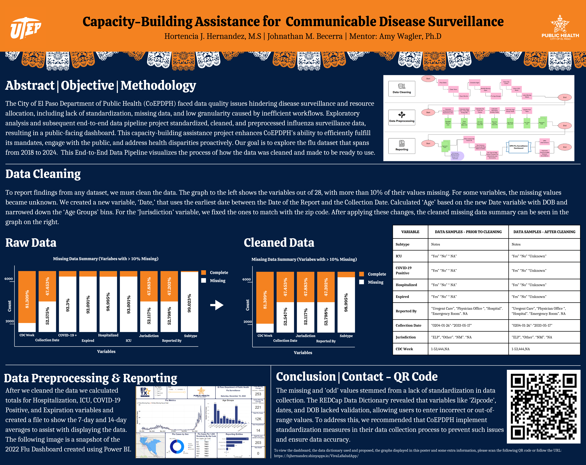
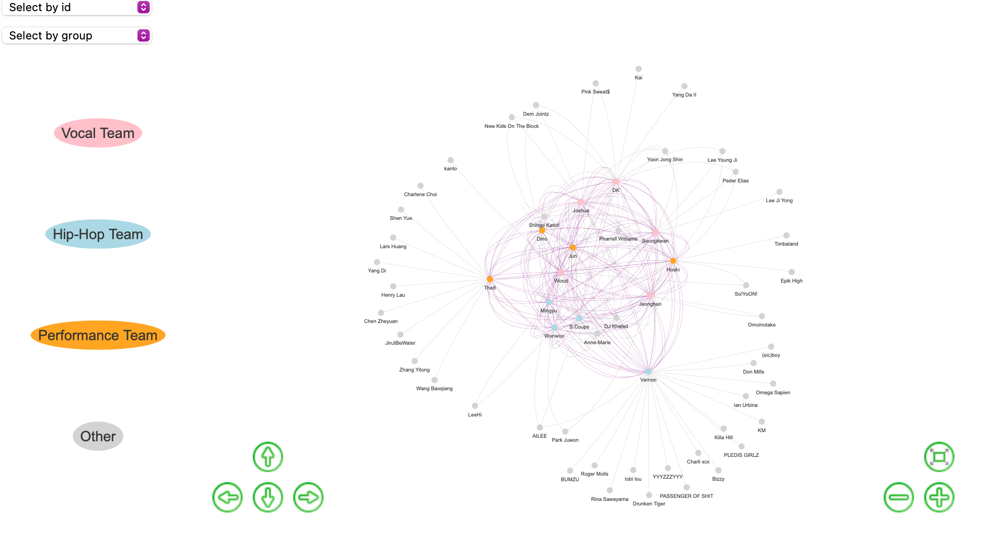
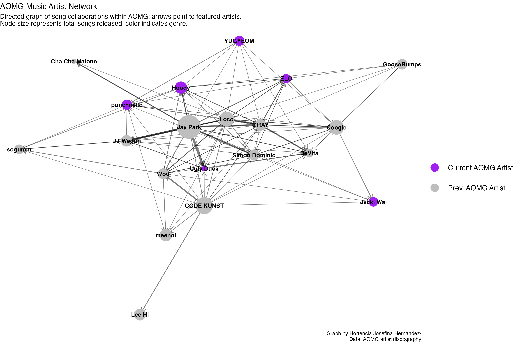

Publications
ORCID: 0009-0009-0284-8703
- Umucu, E., Wagler, A., Tsai, J., Perrin, P., Beaven, P. S., Hernandez, H. J., Herrera, M. J., Al-Hanna, N. F., Piplai, A., Cheever, K., Niemiec, R., & Lee, B. Shielded by strength: How character strengths buffer the link between veteran status and homelessness in a national sample. Journal of Positive Psychology. DOI:10.1080/17439760.2025.2581997
- Hernandez, H., Mein, E., and Wagler, A. Multi-modal Social Network Analysis in a Teacher Preparation Program. (Submitting for publication)
Academic Projects
Conferences & Talks
-
SIAM Conference on Mathematics of Data Science - Atlanta, GA
Title: Protecting Data Privacy in Social Network Studies Using Synthetic Data
Presented methods for generating and evaluating synthetic social network data using probabilistic modeling and deep learning approaches to preserve privacy in longitudinal studies for sensitive data. Please see the poster below for additional information.
 ¡Viva La Salud! 3rd Annual College of Health Sciences’ Health Disparities Conference - UTEP
Title: Capacity-building assistance for communicable disease surveillance
¡Viva La Salud! 3rd Annual College of Health Sciences’ Health Disparities Conference - UTEP
Title: Capacity-building assistance for communicable disease surveillance
Developed an end-to-end data pipeline to clean and standardize El Paso’s influenza surveillance data (2018-2024), resulting in a public-facing dashboard that supports disease monitoring, public engagement, and health equity efforts. Please see the poster below for additional information.

Competitions
-
UTEP Visualization & Interactive Collaboration Competition - Team: Connected Nodes
Title: Visualizing Network Graph Comparisons
Developed an R Shiny app that depicts a series of network graphs showcasing the changes that occurred before and after a two-year research training program. In particular, the network models depict latent structures of identity, self-efficacy, and self-concepts for students undergoing biomedical research training at UTEP.
Interested in some previous coursework? Check out my GitHub.Personal Projects
Listed below are some personal projects I have worked on in regards to graph networks and some sales analysis. My personal projects are projects I like to do for fun or am commissioned to do. If you would like to see more please check out VisualizationsByJosefina, where I upload reports and data visualizations for my personal projects.My Data Visualizations Blog houses some previous data visualizations I completed during my graduate studies.
Versace Sales
This project observed if brand ambassadors impacted quarterly or annual sales within Versace. It focused on the sales between 2019 to 2025. The full report can be read here.
Seventeen Network
This network looked at the connections within the kpop group SEVENTEEN and those they collaborated with as a group and individually. The full report can be read here.

AOMG Network
This graph visualizes a directed network of artist collaborations within AOMG, an entertainment company that serves as a hip-hop and R&B record label and artist management. The full report can be read here.
